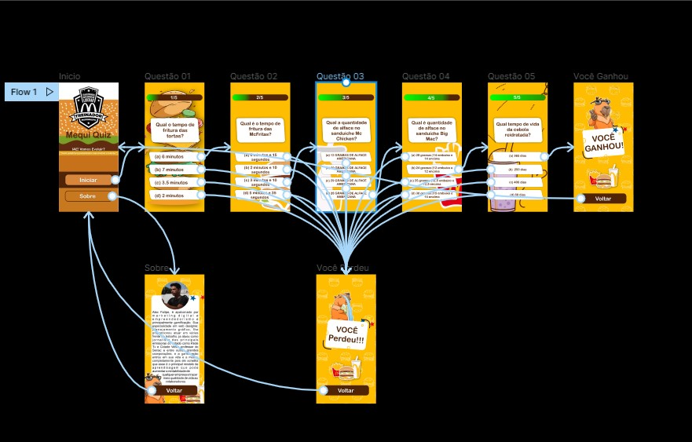

Gamificação
O setor de alimentação está sempre em busca de maneiras inovadoras de treinar suas equipes e melhorar a qualidade do serviço oferecido aos clientes. Agora, uma nova solução está surgindo no mercado: o aplicativo de quiz "Mequi Quiz".
Mequi Quiz é um protótipo de aplicativo que utiliza a gamificação para treinar equipes de restaurante. O aplicativo oferece uma variedade de quizzes e desafios baseados em cenários reais de trabalho, que ajudam os funcionários a desenvolver suas habilidades e conhecimentos sobre o setor de alimentação.
Os funcionários podem competir entre si e verificar sua pontuação em ranking, o que aumenta a motivação e o comprometimento com o aprendizado. Além disso, os gerentes do restaurante podem acompanhar o desempenho dos funcionários e fornecer feedback personalizado.
Mequi Quiz também oferece uma variedade de recursos adicionais, como treinamento de liderança, gerenciamento de estoque e gerenciamento de equipe, que ajudam os gerentes a melhorar a gestão do seu negócio.
"Estou animado em lançar Mequi Quiz e acredito que este será um grande passo para melhorar a qualidade do treinamento de equipe no setor de alimentação. Acredito que Mequi Quiz vai ajudar os restaurantes a se destacarem no mercado e fornecer um excelente serviço aos seus clientes", afirmou Alex Felipe. Mequi Quiz está disponível para download gratuito na App Store e Google Play. A equipe do Mequi Quiz está ansiosa para ouvir feedbacks dos usuários e trabalhar para tornar o aplicativo cada vez melhor.
Implementação

Implementar a gamificação em restaurantes é acreditar que o futuro é hoje, a abordagem divertida e competitiva ajuda a aumentar a motivação dos colaboradores e a melhorar a eficácia dos treinamentos. Com a gamificação, os colaboradores poderão competir entre si em jogos educacionais, desenvolvendo suas habilidades e aumentando sua confiança no trabalho. Além disso, a criação de desafios diários e semanais ajuda a manter a equipe motivada e comprometida com o sucesso do negócio. Veja a seguir alguns exemplos de como pode se dar a implantação da gamificação:
- Aumento da motivação dos funcionários: A gamificação torna os treinamentos mais divertidos e desafiadores, o que pode aumentar a motivação dos funcionários e torná-los mais comprometidos com o aprendizado.
- Melhoria da eficácia dos treinamentos: A gamificação permite que os funcionários pratiquem e apliquem as habilidades aprendidas de maneira mais engajada, o que pode aumentar a eficácia dos treinamentos.
- Medição precisa do desempenho: A gamificação permite medir o desempenho dos funcionários de maneira objetiva e precisa, permitindo aos gerentes identificar áreas de melhoria e fornecer feedback mais eficaz.
- Melhoria da qualidade do serviço: A gamificação pode ajudar a melhorar a qualidade do serviço oferecido aos clientes, já que os funcionários estarão mais motivados e capacitados para oferecer um excelente atendimento.
- Maior retenção de funcionários: A gamificação pode aumentar a satisfação dos funcionários com seu trabalho e, consequentemente, aumentar a retenção de funcionários no restaurante, o que pode reduzir os custos de recrutamento e treinamento.
A gamificação também permitirá medir o desempenho dos colaboradores de maneira mais precisa e objetiva, o que permite identificar as áreas em que precisamos melhorar e fornecer feedback mais eficazes. Acreditar é essa palavra que nos motiva todos os dias e saber que essa abordagem inovadora ajudará a melhorar a qualidade do serviço que oferecemos aos nossos clientes, além de aumentar a satisfação e a retenção das equipes.
Sobre Mim
Alex Felipe, é apaixonado por marketing digital e empreendedorismo e principalmente gamificação. E acredita que essa ferramenta pouco usada pelo mercado pode ser o futuro das empresas hoje. Sua especialidade em Web Designer, planejamento gráfico, lhe proporcionou atuar em várias frentes de trabalho, atuando como jornalista nas principais emissoras do estado de Mato Grosso, como Rede Tv e Cidade Verde, apaixonado pelo ensino, esteve presente no corpo docente do Senac e como pesquisador em uma grande empresa do ramo agro, onde fez pode realizar uma pesquisa sobre como o trabalho em equipe pode aumentar a produção efetiva do preparo de solos.
Contato